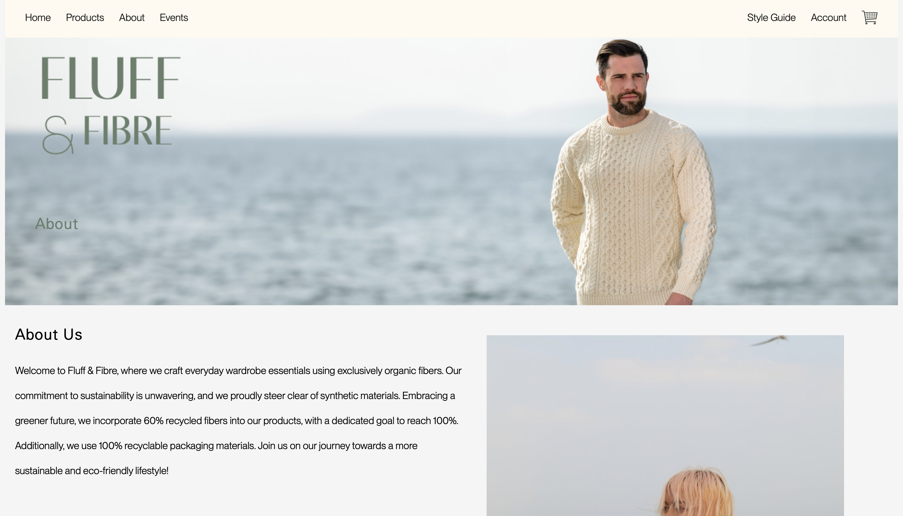
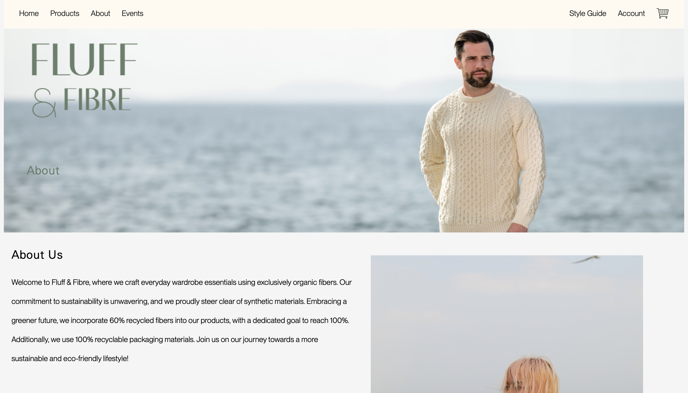

In our Interaction Design class, my team and I undertook the task of creating an app interface. Beginning from scratch, we brainstormed ideas for the app and translated them into extensive wireframes using Figma. With a focus on user experience (UX) design, I contributed to crafting wireframes that laid the foundation for our app's functionality. Throughout the process, we engaged in multiple iterations, refining our designs based on feedback received. Collaboration was key as we continuously iterated on various aspects of the app interface to enhance its usability and appeal. My role involved not only working on UX design but also actively participating in the wireframing process. Together, we navigated through the challenges, ensuring that each iteration brought us closer to our vision for the app interface. In the end, our collective efforts culminated in a polished prototype that showcased the culmination of our teamwork and dedication to creating an engaging user experience.


My partner, Rebecca Wong, and I took on the exciting task of designing and coding a website for a brand. We started by brainstorming the brand's identity and values. Then, we created personas to understand our target audience better. Using HTML and CSS, we brought our designs to life, making sure every detail reflected our brand's story. We went through several rounds of feedback and adjustments to make the website perfect. One of our main goals was to ensure the website looked great on any device. So, we made it responsive to different screen sizes. Though we faced challenges along the way, our teamwork and dedication paid off. We ended up with a beautiful website that truly represents our brand. Overall, this project taught us the importance of creativity, collaboration, and perseverance.
 
